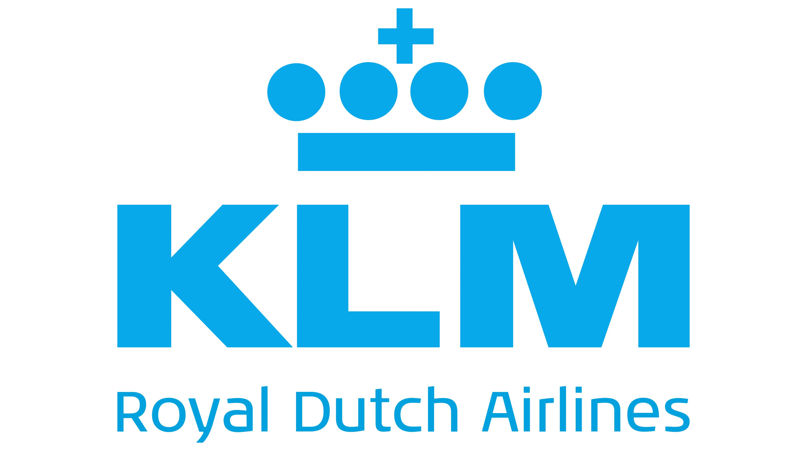
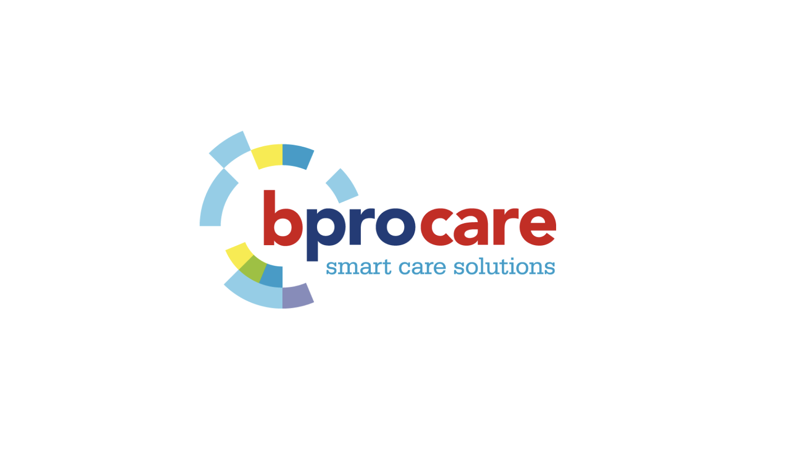
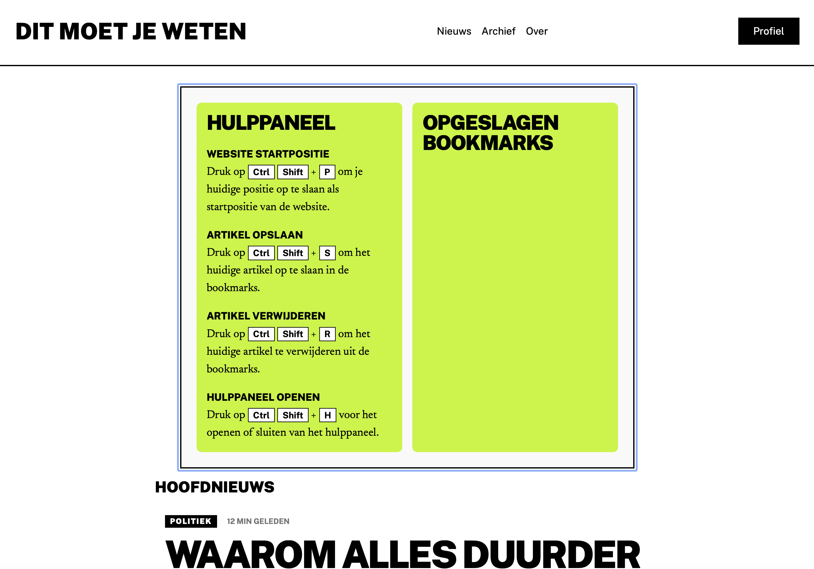
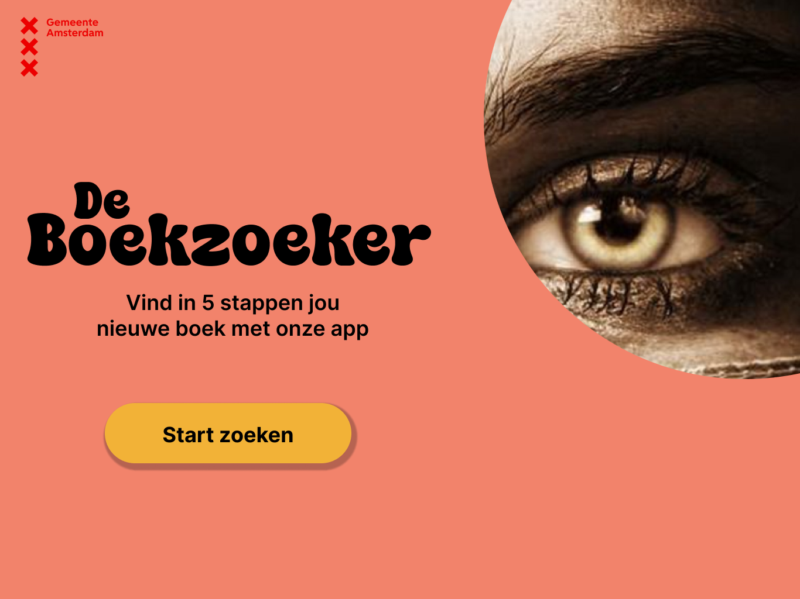
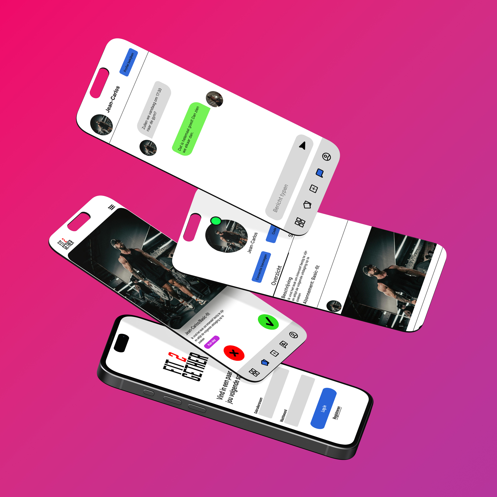
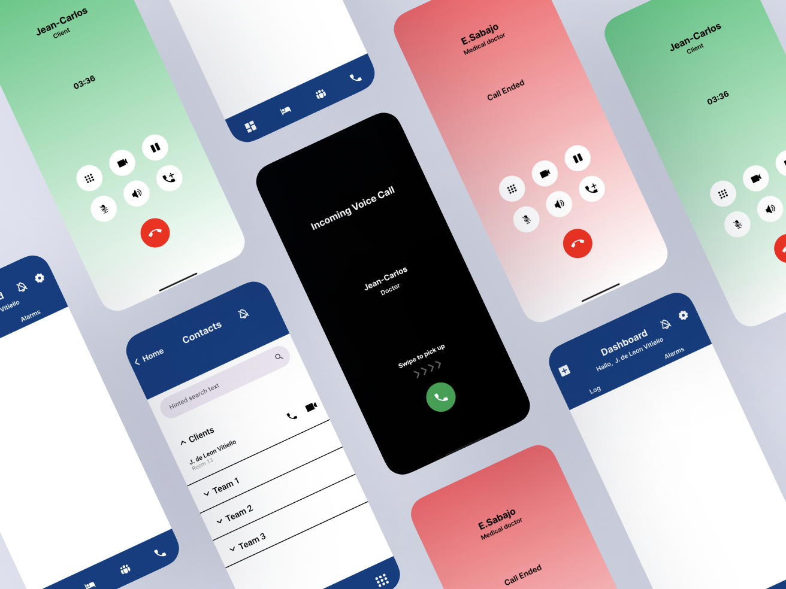
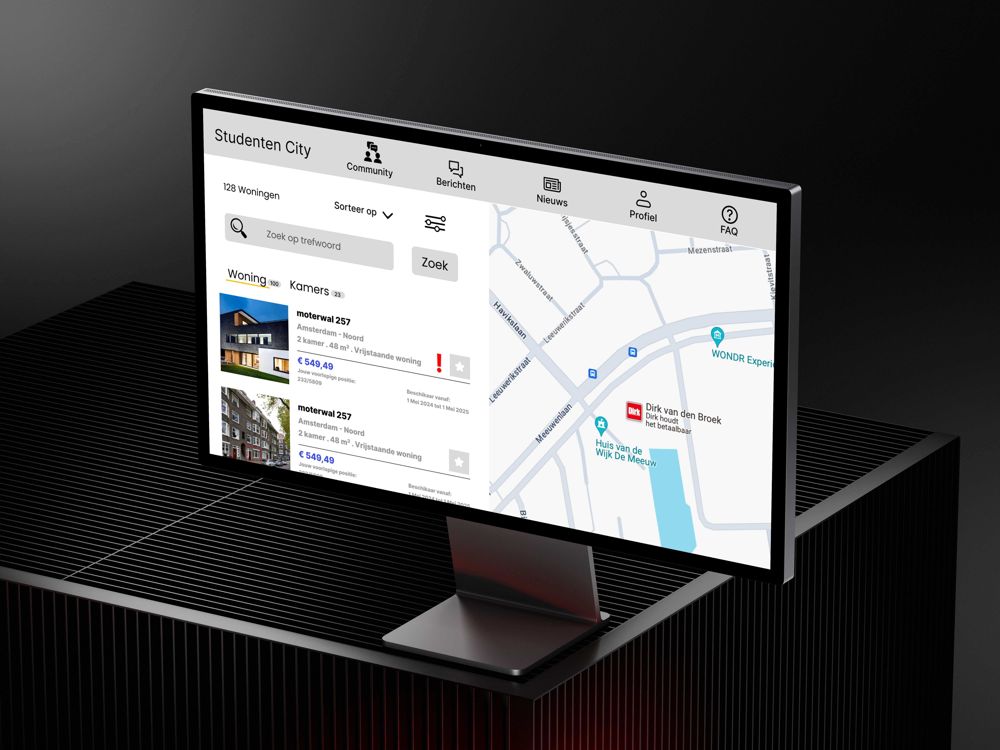

Ik ben
Jean-Carlos
Derdejaars CMD-student met een passie voor UX design en development
Ik ontwerp niet alleen digitale producten, ik onderzoek hoe mensen ze gebruiken. Als CMD-student combineer ik UX-research, usability testing en { development } om gebruiksvriendelijke oplossingen te creeren die zowel esthetisch als functioneel zijn.
UX/UI Redesign
bprocare
Herontwerp van de BproCare-app en de gebruikerservaring vereenvoudigen.
Bekijk Project
webdesign & development
Moodflix
Ontwikkeling van een website die meerdere API's combineert voor gepersonaliseerde content.
Bekijk Project
Human-Centered Design
Page Marker
Ontwerp van een toegankelijk paneel afgestemd op de behoeften van een persoon met een visuele beperking.
Bekijk Project
Bekijk mijn
favoriete projecten
Welkom bij het overzicht van mijn favoriete projecten. Hier krijg je een indruk van het werk waar ik het meest trots op ben. Deze projecten laten mijn passie, vaardigheden en aandacht voor kwaliteit zien.
Bekijk alle projecten




